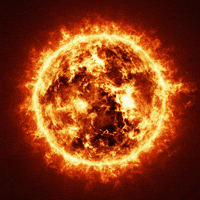
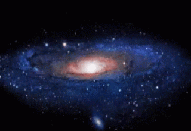

Earth like planets should have rocky surfaces and should orbit a g type star and should be in the
habitable zone where liquid water exists.Three of the planets are smack dab in the so called habitable
zone also known as the Goldilocks zone, where conditions are just right for water and life to flourish
not too much and not too little stellar energy. The four other planets are tantalizingly close to the
Goldilocks zone so close that they, too, could harbor water and potentially life. But just because a
planet is in this sweet spot, doesn’t mean life exists or ever did. If aliens were observing our solar
system from the Trappist-1 network, they might be saying, “Hey, there are three habitable planets there,
Venus, Earth and Mars”

Stars
Stars are huge celestial bodies made mostly of hydrogen and helium that produce light and heat from the
churning nuclear forges inside their cores. Aside from our sun, the dots of light we see in the sky are
all light-years from Earth.The largest known star (in terms of mass and brightness) is called the Pistol
Star. It is believed to be 100 times as massive as our Sun, and 10,000,000 times as bright! In 1990, a
star named the Pistol Star was known to lie at the center of the Pistol Nebula in the Milky Way Galaxy.A
star is an astronomical object consisting of a luminous spheroid of plasma held together by its own
gravity. The nearest star to Earth is the Sun. Many other stars are visible to the naked eye at night,
but due to their immense distance from Earth they appear as fixed points of light in the sky.
In simplest terms here are the definitions: Asteroid: a large rocky body in space, in orbit around the
Sun. Meteoroid: much smaller rocks or particles in orbit around the Sun. Meteor: If a meteoroid enters
the Earth's atmosphere and vaporizes, it becomes a meteor, which is often called a shooting star.

Galexies
A galaxy is a gravitationally bound system of stars, stellar remnants, interstellar gas, dust, and dark
matter. The word galaxy is derived from the Greek galaxias (γαλαξίας), literally "milky", a reference to
the Milky Way.Galaxies are sprawling systems of dust, gas, dark matter, and anywhere from a million to a
trillion stars that are held together by gravity. Nearly all large galaxies are thought to also contain
supermassive black holes at their centers.The closest galaxy to the Milky Way is Andromeda, which is
around 2.6 million light years away from us. Many galaxies are more than 100,000 light years across in
distance. It takes over two hundred million years for the sun to orbit the center of the galaxy. This is
called a galactic year.